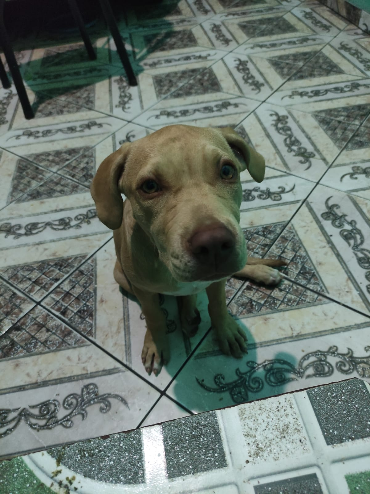

Bella Xuxa Mana
PitBullOs pitbulls, também conhecidos como American Pit Bull Terriers, são uma raça de cães que frequentemente geram opiniões divergentes. Esses cães possuem uma história complexa e são alvo de muitos estereótipos e preconceitos. Os pitbulls são descendentes de cães de combate do século XIX, que eram usados em atividades como a rinha de cães. Infelizmente, devido ao seu histórico de serem usados em lutas e ao seu físico musculoso, esses cães ganharam uma reputação negativa como sendo agressivos e perigosos. No entanto, é importante destacar que o comportamento de um cão é influenciado por diversos fatores, incluindo criação, socialização e treinamento adequado. Os pitbulls, quando criados e socializados corretamente, podem ser cães incrivelmente leais, afetuosos e inteligentes. Eles são conhecidos por serem muito próximos de suas famílias e muitas vezes são excelentes companheiros. Esses cães têm uma energia abundante e adoram brincar, correr e participar de atividades ao ar livre.
Bella
É fundamental compreender que a agressividade não é uma característica intrínseca da raça, mas sim um comportamento que pode ser influenciado por fatores externos, como negligência, abuso, falta de socialização adequada e treinamento incorreto. Infelizmente, muitos pitbulls foram criados e treinados de maneira inadequada, o que levou a incidentes infelizes. A importância de um bom manejo e treinamento não deve ser subestimada quando se trata de qualquer raça de cão, incluindo pitbulls. É responsabilidade dos proprietários garantir que seus cães sejam adequadamente socializados, recebam treinamento de obediência e sejam expostos a diferentes situações desde filhotes. Além disso, é importante cumprir as leis e regulamentos locais que abordam a posse responsável de cães. Em muitos lugares, legislações específicas têm sido implementadas para controlar ou até mesmo banir a posse de pitbulls. No entanto, é importante lembrar que a legislação que visa uma raça específica nem sempre é a solução mais eficaz. É mais construtivo promover a conscientização sobre a importância da criação e treinamento responsáveis, bem como a punição rigorosa para aqueles que praticam atividades ilegais relacionadas a cães de combate. No final das contas, os pitbulls são cães maravilhosos que merecem uma chance justa de serem compreendidos. Eles são animais de estimação leais e amorosos quando criados em um ambiente adequado. Com a atenção e o cuidado corretos, esses cães podem trazer muita alegria e felicidade para as famílias que os acolhem.